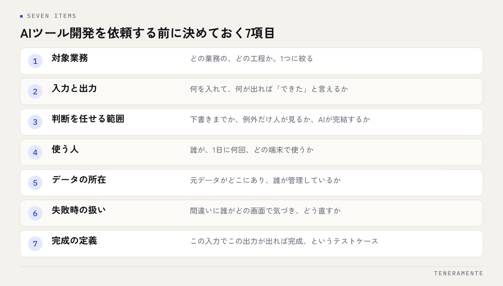

AIツール開発の依頼は、技術の知識がなくても始められます。ただ、何をAIに任せ、何を人が判断するのかを発注側が先に決めているかどうかで、見積もりの精度も、完成後に使われるかどうかも変わります。この記事では、依頼前に決めておきたい7項目と、相談に持っていくもの、見積もりで確認する点を整理します。
📌 この記事の結論
AIツール開発を頼む前に決めるのは「作り方」ではなく、業務の範囲と判断の線引きです。7項目をA4一枚にまとめて持っていくだけで相談の質と見積もりの精度が上がり、「作ったのに使われない」を防げます。
01AIツール開発で頼めること・頼めないこと
ここで言うAIツール開発とは、Large Language Model（LLM：大規模言語モデル）などの生成AIを業務の一部に組み込んだアプリを作ることです。チャットボットに限らず、いまの管理表にAI機能を足す形も含みます。
頼めるのは、たとえば次のような仕事です。
- メール・PDF・帳票から必要な項目を読み取り、管理表に転記する
- 問い合わせを内容ごとに分類し、返信の下書きを作る
- 社内マニュアルや過去の資料をもとに質問に答える（RAG（Retrieval-Augmented Generation：社内データ検索）と呼ばれる仕組み）
- 長い議事録や報告書を要約し、決まった書式に整える
一方で、AIが苦手なことも知っておくと判断がぶれません。ルールが言葉になっていない業務は、AIにも人にも教えられません。AIの出力に「絶対に間違えない」保証もありません。最終判断は人に残し、AIには下書きや候補出しまでを任せる。この線引きが依頼の出発点です。
02依頼前に決めておくこと（1〜3）：業務・入出力・判断の範囲
7項目の前半は、ツールの中身を決める要素です。ここが曖昧だと、見積もりは幅のある概算にしかなりません。

- 対象業務：「どの業務の、どの工程か」を1つに絞ります。毎日か毎週発生し、手順を口頭で説明できる作業が向いています。「営業事務ぜんぶ」ではなく「見積依頼メールの管理表への転記」まで細かくします。
- 入力と出力：何を入れて、何が出てくれば「できた」と言えるかを書き出します。入力はメール本文・PDF・Excelの列、出力は管理表の1行・返信の下書き・分類ラベルなど、実物に近い形で決めます。
- 判断を任せる範囲：「AIが下書きし、人が承認する」「AIが処理し、例外だけ人が見る」「AIが完結する」の3段階から選びます。最初は承認型から始めるのが安全で、精度を確かめてから段階を進めます。
3段階の違いは次のとおりです。
| 段階 | 向く業務 | 人の関わり方 |
|---|---|---|
| AIが案を出し、人が承認する | 対外文書など間違いの影響が大きい業務や、精度を確かめる前の段階 | 出力を毎回確認してから使う |
| 例外だけ人が見る | 分類・転記など型が決まり、精度を確かめ終えた業務 | 条件から外れたものだけ確認 |
| AIが完結する | 間違えても社内で気づいて直せる影響の小さい作業 | 結果を後からまとめて点検 |
この3項目が決まると、開発会社は必要な技術と工数を正確に見積もれます。
03依頼前に決めておくこと（4〜7）：使う人・データ・失敗・完成
後半の4項目は、ツールが現場で回り続けるかを左右します。途中で判明すると手戻りが大きい部分です。
- 使う人：誰が、1日に何回、どの端末（PC・スマホ・タブレット）で使うか。ITに慣れていない人が使うなら、画面の項目数や操作手順の設計が変わります。
- データの所在：元データがどこにあり（Excel、Google Drive、既存システム、紙）、誰が管理しているか。個人情報を含むなら、外部のAIサービスに送ってよい範囲を社内で決めておきます。
- 失敗時の扱い：AIが間違えたとき、誰がどの画面で気づき、どう直すか。確認画面・修正履歴・差し戻しの有無を決めると、不安が仕様に変わります。
- 完成の定義：「この入力10件で、この出力が出れば完成」というテストケースを用意します。検収の基準が言葉ではなく実物になり、開発会社との認識のズレが減ります。
04相談時に持っていくもの
完璧な要件定義書は要りません。開発会社が知りたいのは業務の実態です。次のものがあれば、初回の相談で具体的な話ができます。
- 今の業務の流れを箇条書きにしたもの（5〜10行で十分）
- 実際の入力サンプル（個人情報を伏せたメール・帳票・Excelを2〜3件）
- 「こうなってほしい」出力の見本（手作りのExcelや文章でかまいません）
- その作業にかかっている時間と、担当している人数のおおよそ
- 使っているツールの一覧（Excel、Google Workspace、チャットなど）
- 予算の上限感と、いつまでに使い始めたいか
持ち込みは「A4一枚」で十分
7項目と上のリストを1枚にまとめれば、相談の場で仕様の骨格まで話が進みます。足りない部分は、開発会社の質問に答える形で埋まります。
Excel管理からアプリ化までの検討手順は、Excel管理の限界を超える。AI業務改善ツール導入 完全ガイドにまとめています。
05見積もりで確認すること
見積書は金額だけでは比べられません。同じ範囲を同じ条件で比べるために、次の点を確認してください。
- 初期費用の範囲：ヒアリング・設計・開発・公開作業まで入っているか。追加費用の有無
- 月額費用の範囲：サーバーやドメインの費用、システム監視、修正対応の回数
- AIの利用料：生成AIのAPI利用料を誰が負担するか
- 進め方：PoC（Proof of Concept：試作）から始められるか、フェーズの区切り
- 発注側の作業量：ミーティングの回数、データの提供、動作確認
- 完成の定義：テストケースが仕様書に書かれているか
- 公開後の体制：修正の範囲、連絡手段、対応の目安
複数社から見積書が出てきたら、金額の欄をいったん伏せて、上の項目だけを並べて比べてみてください。範囲の違う見積もりは、そもそも金額を比べても意味がありません。初期費用と月額の内訳の読み方は業務改善AIアプリ開発の費用と期間｜初期費用30万円〜の内訳と進め方で、規模別の相場感は業務Webアプリ開発の費用相場で解説しています。
06よくある質問
要件がまとまっていなくても相談できますか？
PoCと本開発は何が違いますか？
AIの精度が思ったより出なかった場合はどうなりますか？
07まとめ：7項目を一枚にして、小さく始める
AIツール開発の依頼準備は、対象業務・入力と出力・判断を任せる範囲・使う人・データの所在・失敗時の扱い・完成の定義の7項目に尽きます。全部を埋める必要はなく、決まっていないことが分かっている状態で相談に行くことが大切です。PoCから小さく始め、実データで精度と使い勝手を確かめてから本開発に進めば、大きな投資判断を結果を見てから下せます。
TENERAMENTEは名古屋のAI開発企業として、要件整理から設計・開発・運用までを内製し、全工程でClaude CodeなどのAI支援開発を活用しています。AI×WEBアプリ開発は初期費用30万円〜、要件整理・仕様確認・最終確認の3回のミーティングで進め、小さなPoCなら最短2週間で触れる形になります。7項目のメモが一枚あれば、初回相談（60分・無料）で仕様の骨格まで一緒に組み立てられます。決まっていない項目が多い段階からで構いません。お問い合わせからご相談ください。